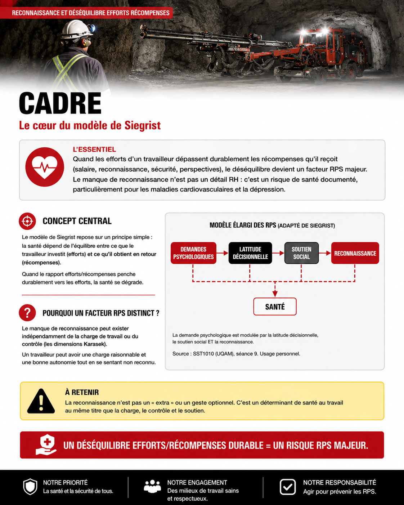
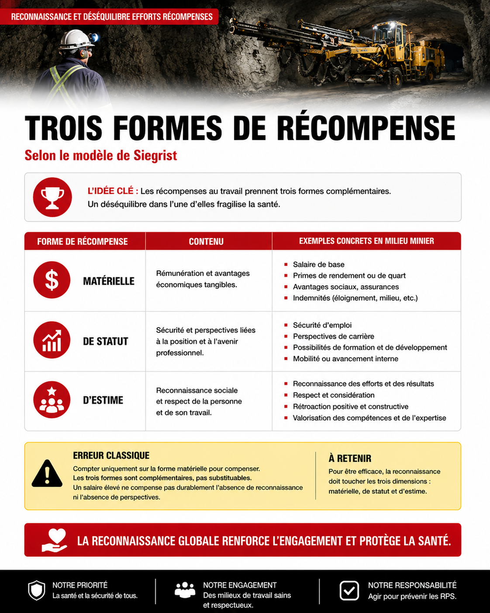
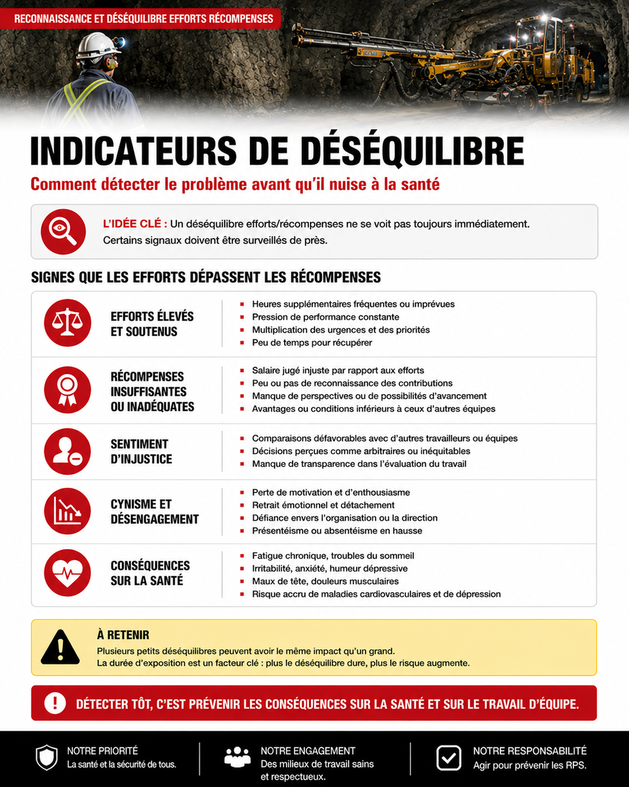
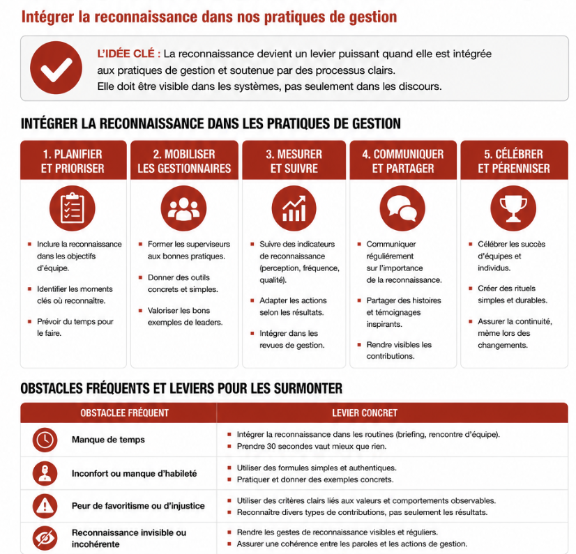
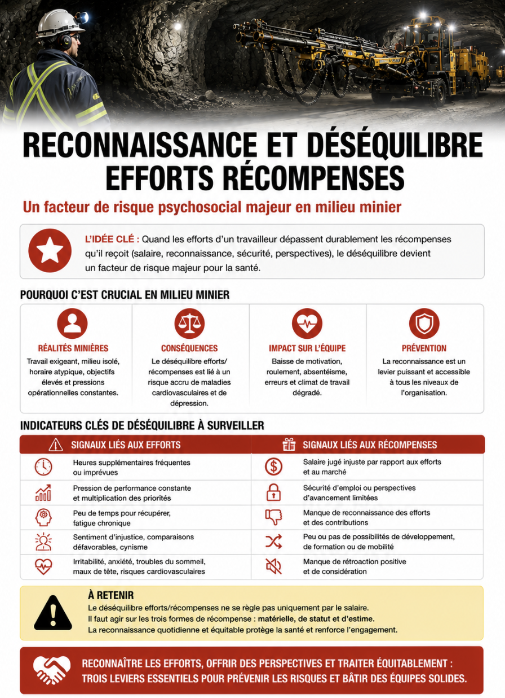

Reconnaissance et déséquilibre efforts récompenses
Table des matières
L'essentiel : Quand les efforts d'un travailleur dépassent durablement les récompenses qu'il reçoit (salaire, mais aussi reconnaissance, sécurité, perspectives), le déséquilibre devient un facteur RPS majeur. C'est le cœur du modèle de Siegrist. Le manque de reconnaissance n'est pas un détail RH : c'est un risque de santé documenté, particulièrement pour les maladies cardiovasculaires et la dépression.
Cadre

Toucher l'image pour l'agrandirConcept central du Modèle de Siegrist, déséquilibre efforts récompenses. Quand le rapport efforts/récompenses penche durablement vers les efforts, la santé se dégrade.
Pourquoi un facteur RPS distinct : le manque de reconnaissance peut exister indépendamment de la charge ou du contrôle (les dimensions Karasek). Un travailleur peut avoir une charge raisonnable et une bonne autonomie tout en se sentant non reconnu.
Trois formes de récompense

Toucher l'image pour l'agrandir| Forme | Contenu |
|---|---|
| Matérielle | Salaire, primes, avantages sociaux |
| De statut | Sécurité d'emploi, perspectives de carrière, mobilité |
| D'estime | Reconnaissance, respect, considération, rétroaction positive |
Erreur classique : compter uniquement sur la forme matérielle pour compenser. Les trois formes sont complémentaires, pas substituables. Un salaire élevé ne compense pas durablement l'absence de reconnaissance ni l'absence de perspectives.
 Toucher l'image pour l'agrandir
Toucher l'image pour l'agrandir
Modèle élargi : demande psychologique modulée par latitude décisionnelle, soutien social ET reconnaissance. Source : SST1010 (UQAM), séance 9. Usage personnel.
Voir aussi Les quatre formes de reconnaissance (Brun et Dugas) pour une typologie québécoise complémentaire.
Indicateurs de déséquilibre

Toucher l'image pour l'agrandirAu niveau du travailleur
- Sentiment de « donner sans recevoir »
- Démotivation progressive
- Cynisme nouveau
- Plaintes sur le manque de reconnaissance
- Désengagement
Au niveau de l'équipe
- Roulement élevé sur certains postes
- Demandes de mutation interne
- Baisse des suggestions et de l'engagement
- Plaintes RH sur l'équité
Mesure : voir Questionnaire de Siegrist (ERI) pour la mesure quantifiée.
Application sur le terrain

Toucher l'image pour l'agrandirConfigurations de déséquilibre fréquent en mine

Toucher l'image pour l'agrandir| Configuration | Pourquoi déséquilibre |
|---|---|
| Sous-traitance | Salaire parfois équivalent, mais perspectives nulles, sécurité d'emploi faible |
| Postes spécialisés en pénurie | Sollicités constamment, peu de marge, reconnaissance souvent uniquement monétaire |
| Postes de relève | Efforts égaux aux titulaires, récompenses inférieures |
| Supervision intermédiaire | Pression bidirectionnelle, perspectives bouchées |
| Postes physiques exigeants | Efforts élevés, reconnaissance souvent faible |
Leviers en mine
Programmes structurés, rétroaction régulière. Voir Pratiques de reconnaissance pour superviseurs.
| Levier | Action |
|---|---|
| Reconnaissance | Programmes structurés, rétroaction régulière. Voir Pratiques de reconnaissance pour superviseurs. |
| Perspectives | Plans de carrière, formation, mobilité interne |
| Sécurité d'emploi | Réduction de la sous-traitance précaire, stabilisation des contrats |
| Justice procédurale | Transparence dans l'attribution des opportunités, des primes |
| Surengagement | Sensibilisation, gestion des heures supplémentaires |
Un programme structuré de reconnaissance non monétaire (rétroaction systématique, valorisation publique, mobilité interne) réduit significativement les scores ERI sans augmenter la masse salariale.
Documents et outils
| Document | Type | Source |
|---|---|---|
| Questionnaire ERI Siegrist | Instrument | INSPQ |
| Brun & Dugas, formes de reconnaissance | Article | Université Laval |
| Guide CGSST sur la reconnaissance | cgsst.com | |
| Grille INSPQ, dimension reconnaissance | INSPQ |
Voir le centre de ressources : 📁 Documents et outils.
Pour aller plus loin
Références
- Siegrist, J. (1996). Adverse health effects of high-effort/low-reward conditions.
- Brun, J.-P. (2008). La reconnaissance au travail.
Articles wiki connexes
- Modèle de Siegrist, déséquilibre efforts récompenses
- [[Que
Pages qui pointent ici (7)
- 🔤 Index alphabétique des articles SST psychosociale
- Dimensions psychosociales du travail SST psychosociale
- Mineur entrepreneur (sous-traitance), vulnérabilités RPS SST psychosociale
- Politique de reconnaissance au travail SST psychosociale
- Reconnaissance et Motivation SST psychosociale
- Reconnaissance et Motivation SST psychosociale
- Statut précaire et travail atypique SST psychosociale